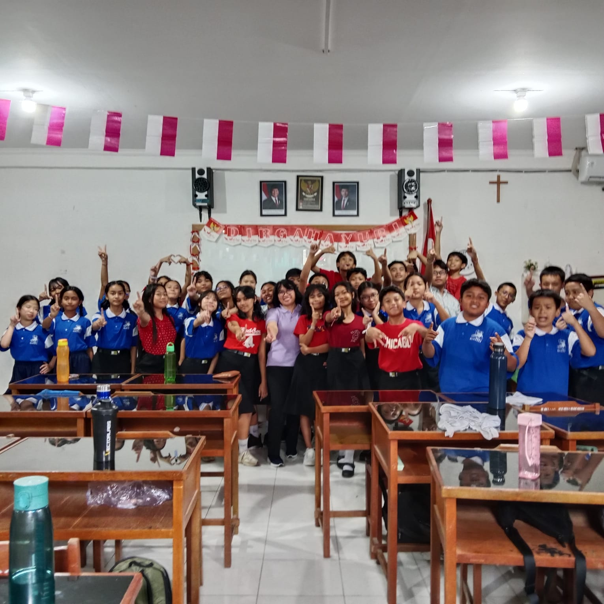

Sesetan, Denpasar Selatan - Bali

Foto Bersama Kelas VII-A
Bu Agustina
classviia82@gmail.com
Ketua: 08873387506
Wakil Ketua: 081236335496
Menjadi kelas yang unggul dalam prestasi, disiplin, berakhlak mulia, serta menjaga kekeluargaan dan kerjasama yang baik.